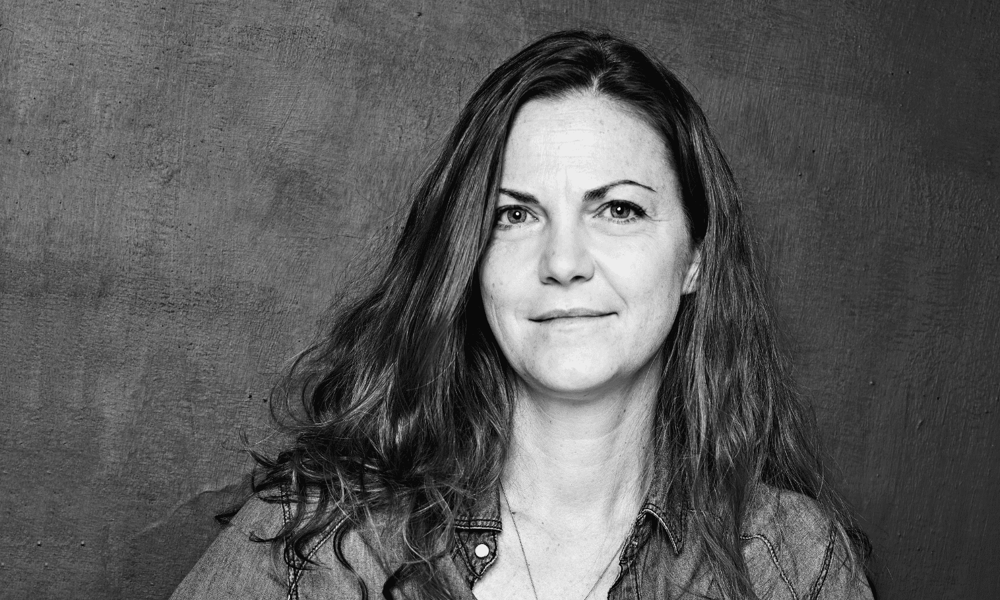

Una observación frecuente dio origen a este ensayo: la calidad del producto no siempre explica el excito digital.
¿Por que este tema?
Hay pasteleras que elaboran productos de muy buena calidad y sin embargo tienen poca visibilidad, mientras que otras, con un producto similar o incluso más sencillo, logran grandes cantidades de seguidores y ventas sostenidas. Esa diferencia no se explica solo por el oficio, sino que tiene que ver con la comunicación.
En ciudades como Río Cuarto, hay muchas mujeres que sostienen emprendimientos gastronómicos desde sus hogares y no siempre cuentan con las herramientas para comunicarse efectivamente en el entorno digital.
Leer más...Tres autores que permiten leer el fenómeno desde ángulos distintos.
No-Cosas
Permite pensar cómo los objetos se convierten en imágenes en la era digital. Los productos existen primero en una pantalla antes de llegar a la mesa.
Ver másLa hora de los depredadores
Aporta una lectura sobre cómo los algoritmos funcionan como mediadores de la atención y determinan quién se hace visible y quién no en el ecosistema digital.
Ver más
Habitar el cuerpo y el lugar
Abre una perspectiva sobre el trabajo artesanal como forma de identidad. Mostrarse trabajando comunica presencia real que las fotos perfectas no transmiten.
Ver másCuentas que representan distintos niveles y tipos de presencia en pastelería